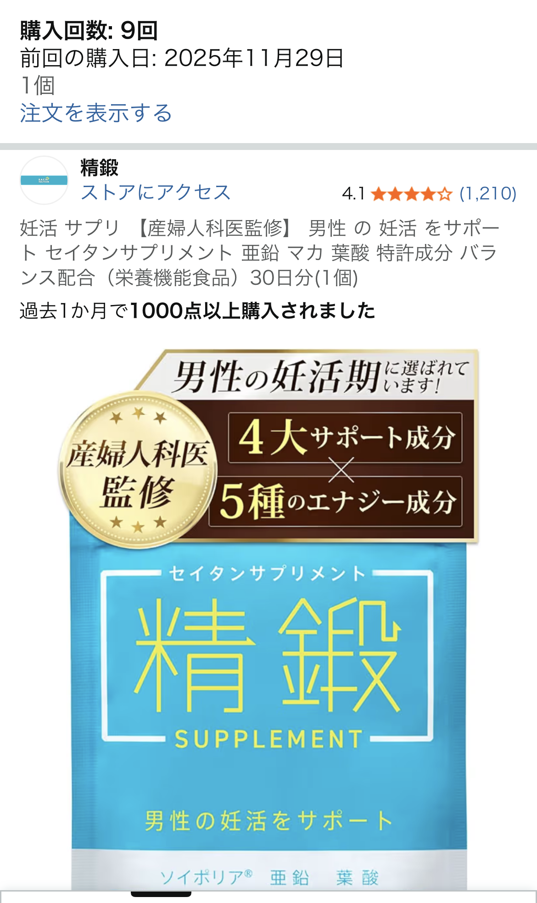

精鍛（セイタン）男性妊活サプリを口コミから徹底レビュー｜臭いは？効果は？
※本記事は、実際の口コミ・一般的な情報をもとにした個人のレビューであり、特定の効果を保証するものではありません。

精鍛 男性妊活サプリとは？
精鍛（セイタン）は、男性の妊活をサポートする目的で作られたサプリメントで、 産婦人科医監修、さらに亜鉛・マカ・葉酸・特許成分をバランスよく配合している点が特徴です。 Amazonでも評価4.1と高く、1,200件以上のレビューが集まる人気商品です。
今回参考にした口コミでは、 「臭いけど効いてるはず」「妊活時の検査結果は問題なし」「活力が上がる気がする」 といった声があり、実際の使用者が感じたリアルなメリット・デメリットが見えてきます。
実際の口コミから見えたメリット
まず注目したいのは、妊活時の検査結果に「問題がなかった」という点です。 サプリメントは即効性があるものではありませんが、日々の栄養補助として 亜鉛・マカ・葉酸をまとめて摂れるのは大きな利点です。
また、「活力が上がる気がする」という声も多く、一般的に亜鉛やマカは コンディション維持に役立つ栄養素として知られています。 精鍛は1日1回で必要量を補えるため、忙しい男性でも続けやすい点が高評価につながっています。
デメリット｜「カプセルが臭い」は本当？
口コミで最も多かったのが「カプセルが臭い」という意見です。 亜鉛サプリは成分の特性上、独特のにおいが出やすく、精鍛も例外ではありません。
毎日飲む日用品として考えると、このにおいは好みが分かれるポイントです。 ただし、においの感じ方には個人差があり、「慣れれば気にならない」という声も一定数あります。
他の妊活サプリとの比較
男性向け妊活サプリは多くありますが、精鍛は以下の点で優位性があります。
- 産婦人科医監修で安心感がある
- 亜鉛・マカ・葉酸・特許成分を1粒で摂れる
- 30日分で価格が比較的手頃
一方で、においが控えめなサプリを求めるなら、錠剤タイプやマルチビタミン系の方が飲みやすい場合もあります。
こんな人におすすめ
- 妊活を始めたばかりで、まずは基本の栄養素を整えたい男性
- 亜鉛・マカ・葉酸をまとめて摂りたい人
- 産婦人科医監修のサプリを選びたい人
- 活力面のサポートも期待したい人
まとめ
精鍛（セイタン）男性妊活サプリは、臭いというデメリットはあるものの、 亜鉛・マカ・葉酸・特許成分をバランスよく配合し、妊活中の男性をサポートする設計が魅力です。 口コミでも「検査結果に問題なし」「活力が上がる気がする」といった声が多く、 継続する価値のあるサプリと言えます。
本記事はあくまで個人の口コミと一般的な情報をもとにしたレビューであり、 効果を保証するものではありません。体調に不安がある場合は専門家に相談してください。